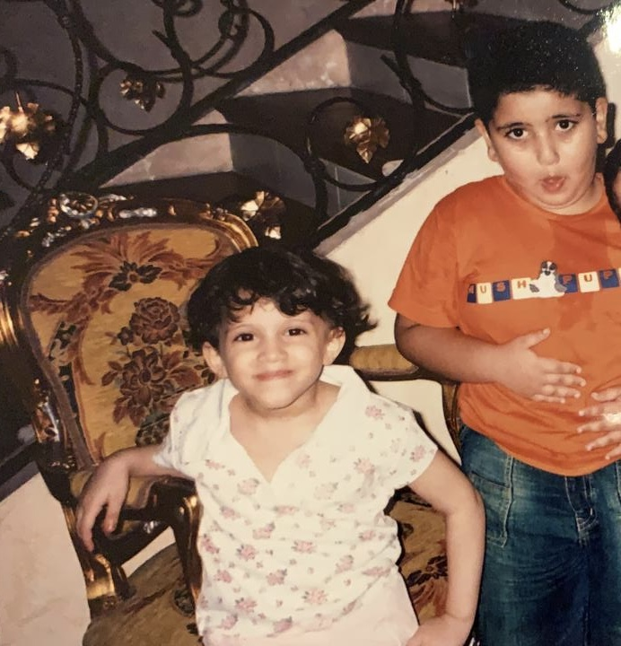

Thank you for taking the time to scan this QR code. Below are a few things I wanted to share with you.
This is the first image description or supporting text. You can explain anything you want here.
This is the second image description. The layout stays vertical on desktop and mobile.

Add another message, explanation, memory, portfolio item, or personal note here.